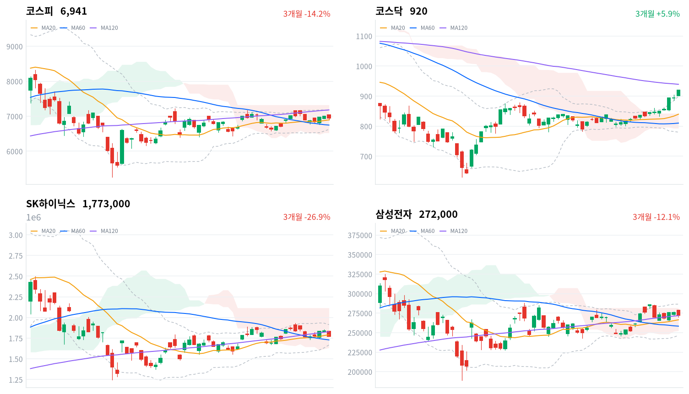

연휴 뒤 첫 세션에 외국인이 메모리 대형주를 팔아 코스피가 7,000선을 하루 만에 다시 내줬다. 같은 날 코스닥은 부품·2차전지·바이오가 넓게 올라 약 3개월 만에 900선 위에서 마감했다.
우리는 이 매도를 10월 8일 삼성전자 잠정실적을 앞두고 대형 반도체를 미리 덜어 낸 움직임으로 본다. 그날 외국인 매도 규모가 이 판단을 확인한다.
연휴 뒤 첫 세션에 코스피는 0.89% 내린 6,941로 마감해 7,000선을 내줬다. 코스닥은 2.98% 올라 919.92로 끝났다. 하락은 메모리 대형주에 몰렸다(SK하이닉스 -3.69%, 삼성전자 -1.45%). 외국인은 코스피에서 1조7,655억원을 순매도했고(전일 1,080억원 순매도, 당일 잠정), 코스닥에서는 1,084억원을 순매수했다. 직전 미국 세션은 나스닥이 1.05% 올라 사상 최고로 마감한 날이었다. 밖의 기술주 강세를 국내에서는 메모리 대형주만 받지 못했다.
채권시장은 오늘의 코스닥 강세를 넓은 위험선호로 값매기지 않았다. 회사채 AA- 3년물과 국고채 3년물의 금리차는 70.3bp로 0.2bp 넓어졌고 최근 2년(532거래일) 가운데 이보다 넓었던 날이 11일뿐이다. 한국경제가 전한 증권가 전망은 대형주 실적 개선은 이미 주가에 반영됐고 중소형주 선호가 이어진다는 쪽이다. 우리는 다르게 본다. 오늘의 이동은 날짜가 정해진 실적 발표 앞에서 대형 반도체를 미리 덜어 낸 매도에 가깝다. 신용 가격이 받쳐 주지 않는 중소형주 강세가 오래 갈 근거는 아직 약하다.
이 판단이 맞다면 외국인 매도는 10월 8일 삼성전자 3분기 잠정실적 뒤 줄어든다. 미국 기술주가 오른 다음 날 국내 메모리 대형주만 밀렸고, 재경일보는 SK하이닉스 하락에 확인된 외부 악재가 없었다고 전했다. 외국인은 같은 날 코스닥에서는 순매수했다. 메모리 이익이 정점을 지났다는 우려로 외국인이 대형 반도체 비중을 실적과 상관없이 줄이는 흐름일 수도 있으나 실적 발표 이틀 전에 개별 악재 없이 나온 매도라 이벤트 앞의 매도로 본다. 두 설명은 10월 8일과 12일 세션의 외국인 순매도 규모와 삼성전자의 상대 성과에서 갈린다. 잠정실적에 시장이 무엇을 기대하는지는 컨센서스를 확보하지 못해 알 수 없다.
오늘 하락에는 큰 무게를 두지 않는다. 연휴 사흘 동안의 미국 금리와 고용보고서를 한꺼번에 받은 첫 세션이었고, 매도는 실적 발표 이틀 앞의 대형주에 몰렸다. 새로 제안할 상품은 없다. 반도체 대형주 판단을 앞당길 근거는 오늘 자료에 없고, 10월 8일 삼성전자 잠정실적과 그날 외국인 순매도 규모가 그 근거를 준다. 코스닥 부품·2차전지의 상승은 배터리 대미 수출 제한 「전망」과 AI 기판 기대에 기대고 있다. 미국의 구체 조치나 실적이 나오기 전에는 이 상승이 이어질지 판단할 근거가 약하다. 10월 7일 이후 중국의 석유제품 수출 재개 여부가 정유주의 방향을 정하고, 한글날 휴장 뒤 10월 12일 세션이 외국인 매도의 성격을 한 번 더 확인한다.
코스피가 20일 이동평균(6,895) 아래에서 마감하면 이 판단을 거둔다. 오늘 장중 저가 6,897이 바로 이 선 위에서 멈췄고, 볼린저밴드 중심선과 같은 자리다. 실적 발표 전에 이 선을 내주면 대형 반도체에 몰린 매도가 지수 전체의 하락으로 번졌다고 보고 판단을 다시 쓴다.
10월 2일 판단은 유효하다. 코스피 종가는 그날 정한 무효화 선인 20일 이동평균 6,877을 지켰다. 다만 7,000선 회복은 하루를 넘기지 못했다. 기다린 조건 가운데 둘이 왔다. 미국 10년물은 고용보고서가 나온 10월 2일(현지)에 4.3bp, 10월 5일에 3.4bp 올라 5.311%가 됐고, 외국인 코스피 순매도는 다시 1조원을 넘었다. 중국의 수출 재개와 삼성전자 잠정실적은 아직 오지 않았다. 잘못 본 것은 외국인 매도가 줄어드는 흐름이다. 9월 28일부터 나흘 연속 줄던 매도가 연휴 뒤 첫날 다시 커졌다. 업종 교체라는 해석은 그대로 두고 무효화 선을 오늘의 20일선으로 올린다.
직전 미국 세션인 10월 5일(현지) 3대 지수는 모두 올랐다(S&P500 +0.66%, 나스닥 +1.05%, 다우 +0.18%). 한국경제는 엔비디아가 이틀째 사상 최고가를 경신하며 나스닥을 역대 최고로 끌어올렸다고 전했다. 오늘 아시아도 대체로 강했다(닛케이 +1.05%, 항셍 +1.00%, 대만가권 +0.22%). 상해종합(+0.31%)은 국경절 휴장으로 9월 30일 종가다. 네 지수는 평균 0.65% 올랐고 코스피는 이보다 1.54%포인트 뒤처졌다. 주변 시장이 모두 오른 날 코스피만 내렸으니 하락의 원인은 국내에 있었다.
코스피는 7,045로 전일 종가 7,004보다 높게 열렸다. 미국 기술주 강세는 시가까지만 이어졌고 그 시가가 하루의 고가였다. 한국 정규장 동안 미국 선물은 거의 움직이지 않았다(S&P500 선물 +0.11%, 나스닥100 선물 +0.06%). 장중 하락을 만든 것은 밖의 가격이 아니라 안의 매도였다.
코스피는 하루 범위의 아래쪽 3분의 1에서 마감했다. 저가에서 조금 올라왔지만 시가 부근으로는 돌아가지 못했다. 코스닥은 반대로 하루 고가에서 마감했다. 원/달러 환율은 개장 무렵 1,346원이 고점이었고 낮 12시 1,341원까지 내려간 뒤 1,343원으로 끝났다. 외국인이 코스피를 크게 판 날에도 원화는 장중 오히려 강해졌다.
외국인의 메모리 대형주 매도가 코스피를 끌어내리고, 코스닥과 부품·2차전지가 그 반대편에 선 날이다. 이투데이는 외국인 매도가 코스피를 끌어내렸다고 전했고, 산경투데이는 외국인 매도가 전기·전자 업종에 몰렸다고 보도했다. 센머니는 대형 반도체에 몰렸던 수급이 2차전지·바이오·소부장으로 옮겨 갔다고 썼다. 시간외 거래는 자료가 없어 매도가 장 마감 뒤에도 이어졌는지는 가리지 못한다.
코스피는 7,000선을 하루 만에 다시 내줬지만 20일선은 지켰다. 종가 6,941은 20일선(6,895)과 60일선(6,747) 위, 120일선(7,179) 아래다. 종가는 120일선보다 3.3% 아래에 있어 위로 열린 거리보다 20일선까지의 거리가 훨씬 가깝다. 코스닥은 2.98% 올랐고, 종가가 최근 석 달 가운데 가장 높다. 두 지수의 하루 등락 차이는 3.87%포인트로, 대형주와 중소형주가 정반대로 움직인 하루다.
| 지수 | 종가 | 등락률 | 시가 | 고가 | 저가 | 전일 종가 |
|---|---|---|---|---|---|---|
| 코스피 | 6,941.39 | -0.89% | 7,044.67 | 7,044.67 | 6,897.38 | 7,003.74 |
| 코스닥 | 919.92 | +2.98% | 902.16 | 919.92 | 901.46 | 893.29 |
코스피는 시가 7,045가 그대로 고가였고 개장 한 시간 안에 전일 종가 아래로 내려섰다. 하락은 메모리 두 종목이 만들었다. 저가 6,897은 20일선 바로 위였고, 지수는 그 자리에서 지지를 받고 올라왔지만 전환선(6,968)은 되찾지 못했다. 부품·2차전지 대형주는 크게 올랐다(삼성전기 +5.95%, 삼성SDI +8.7%, LG에너지솔루션 +5.12%). 그래도 지수 비중이 큰 메모리 두 종목의 하락을 메우지 못했다.
코스닥은 시가 902가 사실상 저가였다. 첫 30분에 916까지 오른 뒤 낮 동안 그 근처에 머물렀고, 장 마감 무렵 다시 올라 고가에서 마감했다. 한국경제는 원익IPS·주성엔지니어링이 17% 넘게, HLB·삼천당제약이 15% 넘게 올랐다고 전했다. 반도체 장비·바이오·2차전지가 함께 오른, 업종이 넓은 상승이다.

코스피·코스닥·SK하이닉스·삼성전자 3개월 일봉에 이동평균(20·60·120)·볼린저밴드·일목균형표 구름대를 겹쳐 그렸다. 상승 캔들은 녹색, 하락 캔들은 적색이다.
코스피는 20일선과 60일선 위, 120일선 아래에서 마감했고 일목 구름 안에 있다. 전환선(6,968)을 되찾으면 120일선(7,179)이 다음 저항이다. 20일선(6,895)을 내주면 일목 기준선(6,806)이 다음 지지선이다.
코스닥은 볼린저 상단(899) 위, 일목 구름 위에서 마감해 단기로는 많이 오른 자리다. 오늘 고가를 넘으면 120일선(939)이 다음 저항이다. 볼린저 상단 아래로 되돌아오면 전환선(871)이 다음 지지선이다.
SK하이닉스(177만원)는 20일선(179만원) 아래로 내려섰고 60일선(173만원) 위, 일목 구름 안에 있다. 20일선을 되찾으면 120일선(183만원)이 다음 저항이다. 일목 기준선(175만원)을 내주면 60일선이 다음 지지선이다.
삼성전자(27만2천원)는 120일선(27만2천원)에 붙어 있고 일목 구름 안에 있다. 전환선(27만4,500원)을 넘으면 구름 상단(28만2천원)이 다음 저항이다. 120일선을 내주면 20일선(26만6천원)이 다음 지지선이다.
위 레벨은 이동평균·볼린저밴드·일목균형표와 스윙 고저를 기계적으로 계산한 값이며 투자 권유가 아니다.
| 주체 | 순매수(억원) |
|---|---|
| 개인 | +7,533 |
| 외국인 | -17,655 |
| 기관 | -34 |
| 주체 | 순매수(억원) |
|---|---|
| 개인 | -2,113 |
| 외국인 | +1,084 |
| 기관 | +1,049 |
외국인의 대형주 매도가 다시 커졌고 개인이 그 물량을 받았다. 외국인은 코스피에서 1조7,655억원을 순매도했다(전일 1,080억원 순매도, 당일 잠정). 9월 23일부터 7거래일째 순매도이고, 9월 28일 3조2,682억원에서 나흘 연속 줄던 규모가 다시 1조원을 넘었다. 개인은 7,533억원을 사 사흘 만에 순매수로 돌아섰고(전일 1조7,897억원 순매도), 기관은 34억원 순매도로 사실상 중립이었다(전일 4,155억원 순매수).
지수와 수급은 같은 쪽을 가리켰다. 외국인 매도가 커진 날 코스피가 내렸고, 산경투데이 보도대로라면 매도는 전기·전자 업종에 몰렸다. 업종별 투자자 자료가 없어 그 매도가 메모리 두 종목에 얼마나 집중됐는지는 수치로 확인하지 못한다. 기관이 매수를 멈춘 것도 지수에는 부담이었다. 이틀 연속 지수를 받치던 기관 매수가 오늘은 없었다.
코스닥에서는 외국인이 1,084억원, 기관이 1,049억원을 함께 순매수했다(당일 잠정). 외국인은 하루 만에 순매수로 돌아섰고(전일 1,767억원 순매도), 개인은 2,113억원을 팔았다(전일 841억원 순매수). 외국인이 코스피에서 판 금액은 코스닥에서 산 금액의 열 배가 넘는다. 외국인 자금이 코스닥으로 옮겨 갔다고 보기에는 규모가 맞지 않는다.
장중 누적 수급과 프로그램 매매는 받을 수 있는 자료가 없어 싣지 않는다.
| 순위 | 종목/ETF | 구분 | 거래대금 | 비고 |
|---|---|---|---|---|
| 1 | SK하이닉스 | 개별주 | 4.83조원 | - |
| 2 | 삼성전자 | 개별주 | 3.50조원 | - |
| 3 | 반도체 테마 ETF | 테마·롱 | 2.03조원 | 28종 합산 |
| 4 | 삼성전기 | 개별주 | 1.22조원 | - |
| 5 | KODEX CD금리액티브(합성) | 단기금리·현금성 | 1.01조원 | - |
| 6 | SK스퀘어 | 개별주 | 0.68조원 | - |
| 7 | 삼성전자우 | 개별주 | 0.49조원 | - |
| 8 | 2차전지 테마 ETF | 테마·롱 | 0.45조원 | 14종 합산 |
| 9 | 삼성SDI | 개별주 | 0.36조원 | - |
| 10 | LG전자 | 개별주 | 0.28조원 | - |
단위 백만원 원본을 조 단위로 환산했다. 같은 기초자산 ETF는 방향별로, 같은 테마 섹터 ETF는 테마별로 묶고 지수·해외 ETF는 제외했다.
가격이 내린 쪽에 거래가 가장 많이 몰렸다. SK하이닉스(4.83조원)와 삼성전자(3.50조원)가 1·2위였고, 반도체 테마 ETF 28종 합산 2.03조원이 3위다. 거래대금은 매수와 매도를 함께 세므로, 이 쏠림은 메모리 대형주에서 손바뀜이 컸다는 뜻이다. 돈이 들어왔다는 증거로 읽을 수는 없다.
오른 쪽의 거래도 컸다. 삼성전기가 1.22조원으로 4위였고, 2차전지 테마 ETF 14종 합산 0.45조원과 삼성SDI 0.36조원, LG전자 0.28조원이 상위 10에 들었다. WICS 2차전지 섹터가 6.00% 오른 것과 같은 쪽이다. 상위 10에 레버리지·인버스 상품은 없다. KODEX CD금리액티브(합성)는 단기금리를 따르는 대기 자금 상품이라 방향성 거래와 결이 다르다.
코스닥 강세는 몇 종목이 끈 상승이 아니라 업종이 넓게 오른 상승이었다. 소프트웨어(+6.66%)는 74종목 가운데 54종목이 올랐다. 전자장비와기기(+6.38%)는 105종목 가운데 75종목, 전기제품(+6.07%)은 69종목 가운데 57종목이 함께 올랐다. 화학(+4.96%)도 122종목 가운데 76종목이 올랐다. 반면 전자제품(+7.37%)은 16종목 가운데 8종목만 올라 상승률은 가장 높아도 LG전자 등 일부 종목이 끈 좁은 상승이다.
WICS 반도체 섹터는 1.53% 올라 메모리 두 대형주와 부호가 갈렸다. 이 섹터에는 오늘 크게 오른 코스닥 장비주가 함께 들어 있다. 방산(-3.24%)과 조선(-1.57%)은 WICS 12개 섹터 가운데 가장 약했다. 석유와가스 업종은 0.31% 올랐지만 19종목 가운데 9종목만 올라 10월 2일의 넓은 상승과 달리 좁아졌다.
메모리 대형주가 지수를 가장 크게 끌어내렸다(SK하이닉스 -3.69%, 삼성전자 -1.45%). 재경일보는 SK하이닉스 하락에 확인된 외부 악재가 없었고 차익 실현 매물이 나왔다고 전했다. 뉴스핌은 이날을 반도체 숨고르기로 불렀다. 삼성전자우도 1.39% 내렸다.
기판·부품주는 함께 크게 올랐다(삼성전기 +5.95%, LG이노텍 +12.2%, 대덕전자 +6.83%, 코리아써키트 +7.65%). 남도일보는 LG이노텍 상승을 AI 서버용 반도체 기판 기대와 외국인 매수로 설명했지만, 재경일보는 뚜렷한 공시가 없었다고 봤다. 삼성전기는 당일 재료가 확인되지 않았다. 매일경제는 국민연금이 3분기에 LG이노텍 등 기판주에서 차익을 실현했다고 보도해 오늘의 매수 주체와 방향이 달랐다.
2차전지 셀·소재주가 크게 올랐다(LG에너지솔루션 +5.12%, 삼성SDI +8.7%, 엘앤에프 +8.96%). 서울경제와 CBC뉴스는 중국산 배터리의 대미 수출 제한 전망과 미국 ESS 투자 확대 기대를 배경으로 꼽았다. 같은 재료권의 포스코퓨처엠(+9.42%)과 LG화학(+6.29%)도 올랐다.
LG전자는 7.64% 올랐다. 한국경제TV는 북미 AI 데이터센터 냉각 솔루션 수주 모멘텀을 배경으로 전했다.
두산은 9.47% 올랐다. 재경일보는 특별한 공시 없이 기술적 매수가 들어왔다고 전했고 확인된 재료는 없다.
방산주는 약했다(한화에어로스페이스 -4.57%, LIG디펜스앤에어로스페이스 -7.74%). 거래대금 상위 종목 가운데 NC(-7.05%)는 크게 내렸고 코스맥스(+10.37%)와 이수페타시스(+8.83%)는 크게 올랐지만, 세 종목 모두 확인된 재료는 없다.
국고채는 미국 장기금리 상승을 거의 따라가지 않았다. 미국 10년물은 직전 세션(10월 5일)에 3.4bp 올라 5.311%가 됐지만, 오늘 국고채 10년물은 0.4bp 오른 4.369%, 3년물은 0.4bp 내린 3.933%였다. 두 만기의 금리차는 43.6bp로 0.8bp 넓어졌고 최근 2년(532거래일) 가운데 넓은 쪽 17% 안이다. 원/달러 환율은 1,343원으로 마감해 하루 범위의 아래쪽에서 끝났다.
| 지표 | 금리 | 전일比(bp) | 기준일 |
|---|---|---|---|
| 국고채 3년 | 3.933% | -0.4 | 2026-10-06 |
| 국고채 10년 | 4.369% | +0.4 | 2026-10-06 |
| CD 91일 | 3.24% | +3.0 | 2026-10-06 |
| 회사채 AA- 3년 | 4.636% | -0.2 | 2026-10-06 |
| 한국은행 기준금리 | 3.00% | 0.0(전월比) | 2026-09 |
기준금리는 9월 기준이다. 전일比는 10월 2일 대비다.
연휴 사흘 동안 미국 10년물은 고용보고서가 나온 10월 2일(현지)에도 4.3bp 올랐다. 국고채가 그 상승을 거의 받지 않은 이유는 오늘 자료로 가리지 못한다. 장기 쪽이 단기보다 조금 더 올라 커브는 가팔라지는 쪽으로 움직였지만, 하루 변화가 1bp에 못 미쳐 방향을 말할 크기는 아니다. CD 91일물은 3.0bp 올라 3.24%가 됐고, 이 움직임을 설명할 재료는 확인하지 못했다.
국고채 3년물은 기준금리(3.00%)보다 93.3bp 높고, 최근 2년 가운데 넓은 쪽 18% 안이다. 이 격차에는 정책 경로 기대와 기간프리미엄이 섞여 있다. 한국은행 금통위는 10월 22일이다.
신용 쪽은 움직이지 않았다. 회사채 AA- 3년물은 0.2bp 내렸고, 국고채 3년물과의 금리차는 0.2bp 넓어졌다. 코스닥 중소형주가 크게 오른 날에도 신용 금리차가 좁혀지지 않아 채권시장은 위험선호의 회복을 아직 값매기지 않았다.
헤럴드경제에 따르면 서울남부지법이 한국거래소의 시가총액 미달 상장폐지 규정을 위법·무효로 판단했다. 법원은 소명 기회를 주지 않은 점, 회복 요건을 45거래일 연속 유지로 강화한 점, 기준 상향 시점을 앞당긴 점이 비례의 원칙에 어긋난다고 봤다. 이 판결은 멀티플을 건드린다. 부실기업 퇴출이 늦어지면 코스닥 전체의 할인을 줄이려던 정책도 속도가 늦어진다. 시총 미달 위기의 소형주에는 단기 안도이고, 코스닥의 질이 좋아진다는 기대에는 부담이다. 오늘 코스닥 상승은 시총 상위 소부장·바이오·2차전지가 이끌어 이 판결과 겹치는 종목군이 아니었다. 정부는 법원 판단을 반영한 보완책을 검토하고 있고, 거래소의 항고나 규정 개정 일정은 미확정이다.
더팩트에 따르면 한국거래소는 11월 2일 저PBR 기업 명단을 처음 공개한다. 10월 22일까지 PBR 개선계획을 담은 기업가치 제고 계획을 공시하면 공표를 1년 유예받는다. 명단 공개는 계획을 내지 않은 저PBR 기업에 주주환원 압력을 더해 멀티플로 이어진다. 수혜 쪽은 저PBR 금융·지주·내수 가치주인데, 오늘 WICS 은행(-0.22%)·증권(-0.97%) 섹터는 약했다. 반도체 수급이 장을 지배한 날이라 이 재료가 가격에 드러날 자리가 없었다. 10월 22일 공시 마감까지 계획을 내는 기업이 얼마나 늘어나는지가 첫 분기점이다.
서울경제와 매일경제는 국민연금이 3분기에 반도체 소부장 61곳의 지분을 줄이고 건설·보험 42곳을 늘렸다고 보도했다. 현대해상 지분은 2.29%포인트 늘었고 증권주는 줄였다. 대형 연기금의 선호가 금리 수혜 업종으로 옮겨 가면 소부장의 수급 받침이 약해진다. 다만 분기 지분 변동은 지난 석 달의 결과라 오늘 매매와 바로 잇기 어렵다. 오늘 코스닥 반도체 장비주는 오히려 크게 올랐고, 손해보험 업종은 0.53% 올랐다. 다음 분기 지분 공시가 같은 방향인지 확인한다. 일정은 분기 단위다.
서울경제와 CBC뉴스가 2차전지 급등의 배경으로 든 재료는 이익 경로다. 미국 ESS 시장에서 중국산을 대신할 수요가 국내 셀 업체의 물량으로 온다는 기대다. 수혜는 국내 셀·소재, 부담은 중국 셀에 기대는 ESS 업체 쪽이다. 오늘 가격은 수혜 쪽과 맞았다. 다만 아직 「전망」이고 미국의 구체 조치는 나오지 않았다. 발표 일정은 미확정이다. 조치가 확정되면 셀 업체의 물량 전망이 실제로 바뀌는지 다음에 확인한다.
중국은 국경절 연휴가 끝나는 10월 7일 이후 석유제품 수출 재개 여부를 정한다. 매일신문과 머니투데이는 10월 2일 재개가 불확실하다고 전했다. 재개가 발표된 다음 세션에 석유와가스 업종이 코스피를 크게 밑돌면 정제마진 재료가 가격에서 빠졌다는 뜻이다. 삼성전자 3분기 잠정실적은 10월 8일이고, 한국은행 금통위는 10월 22일이다. 국내 증시는 10월 9일 한글날에 쉰다.
연휴 뒤 첫날 뉴스는 고금리 속 AI 이익 기대와 실적 시즌 개막, 그리고 연기금·제도의 업종별 영향에 몰렸다.
고금리 덮치자 … 국민연금, 보험株 사고 증권株 팔아매일경제 · 10월 6일
국민연금공단이 3분기 국내주식 포트폴리오를 고금리 환경에 맞춰 조정했다. 3분기 지분 변동이 있었던 118개 종목 중 55개는 지분을 늘리고 63개는 줄였다. 고금리 수혜가 예상되는 보험주는 매수했는데, 현대해상 지분을 2.29%포인트 늘렸고 한화생명과 DB손해보험도 각각 1.06%포인트, 1.03%포인트 더했다. 금리 상승이 채권 운용수익 개선으로 이어지기 때문이다. 반면 고금리에 취약한 증권주는 매도해 키움증권·삼성증권·미래에셋증권 지분을 각각 1%포인트 이상 줄였다. 반도체 기판주에서는 차익을 실현했고, AI 팩토리 사업 성장을 기대해 네이버 지분은 8.22%에서 9.49%로 높였다.
금리·주가 이례적 커플링…AI가 깨뜨린 시소 방정식서울경제 · 10월 6일
미국 10년물 국채금리가 5.347%로 24년 만에 최고치를 기록했으나 나스닥지수는 같은 기간 사상 최고치인 2만 7477.31을 경신했다. 일반적으로 금리 상승은 기술주에 부담이 되지만, 인공지능 투자가 늘며 생긴 기업 이익 증가 기대가 고금리의 부정적 영향을 상쇄하면서 금리와 주가가 함께 오르고 있다. 국내에서도 코스닥지수가 919.92로 3개월 만에 900선을 회복했고, 소재·부품·장비 기업들의 실적 기대가 상승을 이끌었다. 전문가들은 고금리 속 주가 랠리가 AI 투자와 반도체 기업의 실적 개선에 기반하고 있으나, 장기채 보유 위험 보상이 커지면서 이 추세의 지속 가능성을 둘러싼 우려도 커지고 있다고 지적했다.
채권 불안 여전한데...JP모건 이어 시타델까지 "조정은 기회" [딥시그널]한국경제TV · 10월 6일
미국 10년물 국채금리가 24년 만의 최고치인 연 5.31%까지 올랐으나 기술주는 미국과 한국 증시에서 동반 강세를 이어가고 있다. JP모건과 시타델 등 월가 대형 기관들은 현 금리 수준이 성장을 훼손할 정도가 아니며, 과거 1990년대처럼 금리 강세 속에서도 지수가 오를 수 있다고 진단한다. 시타델 분석에 따르면 연초 이후 미국 주식 상장지수펀드로 유입된 자금은 1조 9,000억 달러로 전년 동기 대비 43% 빠르며, 절반 이상인 7,700억 달러가 3분기 조정 국면에 몰렸다. 미국 기업의 올해 자사주 매입 승인액은 1조 3,000억 달러로 사상 최대다. 다만 이달 하순 실적 발표 시즌이 시장 방향을 정할 것이라는 전망이다.
법원에서 제동 걸린 ‘시총 미달 상폐’…코스닥 부실기업 상폐 정책도 ‘흔들’헤럴드경제 · 10월 6일
서울남부지법이 한국거래소의 시가총액 미달 상장폐지 규정을 위법·무효로 판단하면서 부실기업 퇴출 정책에 차질이 생겼다. 법원은 기업에 이의신청과 소명 기회를 주지 않은 점, 회복 요건을 '45거래일 연속 유지'로 강화한 점, 기준 상향 시점을 앞당긴 점 등이 비례의 원칙에 어긋난다고 판단했다. 시가총액은 기업이 통제하기 어려운 외부 요인의 영향을 받는 만큼 회생 가능성을 소명할 기회를 줘야 한다고 지적했다. 현재 시총 200억원 미만 코스닥 상장사 72곳 중 다수가 법적 대응에 나섰고, 금융당국이 내년 7월로 유예한 시총 기준 추가 상향도 변수가 됐다. 거래소는 관리종목 지정을 유예할 수 있도록 규정을 개정했고, 정부는 법원 판단을 반영한 보완책 마련을 검토하고 있다.
저PBR 명단 공개 한달 앞…상장사 764곳 '밸류업' 동참더팩트 · 10월 6일
한국거래소의 저PBR 기업 첫 공개를 앞두고 기업가치 제고 움직임이 확산하고 있다. 2024년 5월 제도 시행 이후 기업가치 제고 계획을 공시한 기업은 764곳으로 늘었고, 이들의 시가총액은 5139조8000억원으로 전체 시장의 84.0%를 차지했다. KT&G·셀트리온·제일기획 등이 3600억원~400억원 규모의 자사주 취득과 소각을 결정했고, 지난해 전체 상장사의 자기주식 소각액은 21조4000억원으로 전년 대비 크게 늘었다. 11월 2일 저PBR 기업 명단이 공개될 예정이며 10월 22일까지 PBR 개선계획을 포함한 기업가치 제고 계획을 공시하면 1년간 공표 유예를 받을 수 있다. 코리아 밸류업 지수는 9월 말 3228.34로 지난해 말보다 79.6% 올랐다.
코스닥, 석달 만에 900 뚫었다…소부장·바이오·배터리주 강세한국경제 · 10월 6일
코스닥지수가 6일 919.92로 마감하며 약 3개월 만에 900선을 되찾았다. 반도체 소재·부품·장비와 바이오, 2차전지 업종의 시가총액 상위 기업들이 주가를 크게 올렸고, 외국인과 기관투자자의 순매수가 이를 뒷받침했다. 원익IPS와 주성엔지니어링은 각각 17% 이상 급등했으며, 주성엔지니어링은 코스닥 시총 3위로 올라섰다. HLB와 삼천당제약 등 바이오주도 15% 이상 올랐고, 에코프로와 에코프로비엠 등 2차전지주도 강세였다. 코스피가 박스권에 갇힌 가운데 투자심리가 코스닥으로 쏠렸다. 증권사는 대형주 실적 개선이 이미 주가에 반영된 반면 코스닥 상장사의 실적 개선은 내년부터 본격화된다며 중소형주 선호 흐름이 이어질 것으로 전망했다.
"2030보다 강심장이네"…증시 뛰자 '빚투 큰손' 확 바뀌었다한국경제 · 10월 6일
올해 상반기 국내 증권사의 신용융자 시장에서 60대 이상 고령 투자자의 '빚투' 규모가 급증했다. 국회 정무위원회 소속 의원이 10개 종합금융투자사업자의 신용거래융자 현황을 분석한 결과, 70세 이상의 신용융자 잔액은 지난해 말 1조5754억원에서 올해 6월 말 2조4709억원으로 56.8% 늘었다. 60대도 5조169억원에서 7조1371억원으로 42.3% 늘었다. 같은 기간 전체 신용융자 잔액 증가율 36.3%를 크게 웃돌았으며, 30대·20대·40대·50대보다 증가율이 높았다. 특히 6월에 전체 신용융자가 줄었는데도 60대는 0.5%, 70세 이상은 4.1% 늘었다. 6월 말 기준 이 연령층이 차지하는 신용융자 비중은 30.4%로 2024년 말 25.2%에서 꾸준히 올랐다.
엔비디아, 이틀째 사상 최고…시총 6조弗 고지 '눈앞'한국경제 · 10월 6일
엔비디아가 이틀 연속 사상 최고가를 경신하면서 미국 나스닥지수가 5일 역대 최고치를 기록했다. 10년물 국채 금리가 2002년 이후 최고 수준에 근접했는데도 기술주 성장세와 인공지능 모멘텀이 고금리 우려를 눌렀다. 엔비디아는 전일 대비 2.1% 오른 238.90달러로 마감했고, 시가총액은 5조7600억달러로 커졌다. 지난달 28일 발표한 1500억달러 규모 자사주 매입 한도 증액과 사업 파트너 폭스콘의 3분기 매출 47% 급증이 랠리를 이끌고 있다. 미국 10년물 국채 금리는 5.31%, 30년물은 5.664%까지 올랐지만 월가는 이를 경기가 탄탄해서 나온 자연스러운 결과로 평가한다. 시장은 3분기 실적 시즌과 14일 소비자물가지수 발표를 주목하고 있다.
소부장 덜고 건설·보험주 담은 국민연금서울경제 · 10월 6일
국민연금이 3분기 중 반도체 소부장주 61곳의 지분을 줄이고 건설·보험주 42곳을 늘렸다. 소부장 지수가 7월 39.94% 급락한 뒤 8월 이후 반등하면서 차익을 실현했다는 해석이다. 건설주는 GS건설을 13.32%에서 12.25%로 올리는 등 수익성 개선과 AI 데이터센터·원전 수주 기대에 투자를 늘렸다. 보험주도 현대해상·DB손해보험 등의 지분율을 높였는데, 금리 상승으로 신규 채권 투자수익률이 좋아질 것으로 예상되기 때문이다. 반면 증권주는 거래 대금 감소와 금리가 올라 생긴 채권 평가 손실 부담으로 삼성증권 등 3곳의 지분을 모두 줄였다. 화장품과 식품주도 선별적으로 담으며 포트폴리오 업종을 재편했다.
실적시즌 '개막'…"반도체·에너지株 가장 유망"한국경제TV · 10월 6일
삼성전자가 8일 3분기 실적 공시를 시작하며 실적 시즌이 본격화된다. 금융정보업체 에프앤가이드 분석 결과, 상장사 273곳의 3분기 영업이익 전망치는 약 254조 원으로 전년 같은 시기보다 3배 이상 늘 것으로 예상된다. 다만 최근 원화 강세로 수출 기업의 환산 이익이 줄어 한 달 전 추정치 대비로는 2.1% 낮아졌다. 반도체 업종의 영업이익 증가(+679.3%)가 가장 두드러지는데, 삼성전자(108조 원, +793%)와 SK하이닉스(77조 원, +578%)의 3분기 영업이익 전망치가 전체 상장사의 약 73%를 차지한다. 에너지 업종도 호조(+336.2%)가 전망되는 반면, 원재료 부담 증가로 전력(-56.2%)과 화학(-26.0%) 업종은 영업이익이 줄 것으로 예상된다.
데이터센터 전력 구원투수 '비코' 고공행진[미국 주식 돋보기]매일경제 · 10월 6일
AI 데이터센터의 전력 수요 급증에 따라 고밀도 전력 변환 기술 기업 비코의 주가가 급등하고 있다. 5일 현지시간 뉴욕증시에서 비코의 주가는 305.61달러로 최근 1개월 58.1%, 연초 이후 161.5% 올랐다. 비코의 핵심 경쟁력은 서버 내 전력 손실을 줄이는 수직형 전력 공급(VPD) 기술로, AI 칩의 연산 성능이 높아지며 생긴 전력 공급 문제를 해결한다. 2026 회계연도 2분기 매출은 1억4335만달러, 수주잔액은 3억8000만달러(전년 동기 대비 145% 급증)를 기록했다. 비코는 주요 기업 4곳과 VPD 특허 라이선스 계약을 맺었고, 로열티 수익 증가를 반영해 3분기 매출 성장률 가이던스를 20% 이상에서 30% 이상으로 올렸다.
'美해병 오키나와 여성 살인' 파문…日정부, '反미군 확산' 우려(종합)연합뉴스 · 10월 6일
오키나와의 미군 기지 소속 해병대원이 30대 여성을 살해한 사건으로 파문이 확산하고 있다. 미군 병사 체포는 지난 4일 이뤄졌다. 용의자는 20세 일병 데빈 제이콥 발라드로 강도살인 혐의를 받고 있다. 사건 시점이 자민당 추천 후보의 오키나와 지사 선거 승리 직후라는 점에서 기지 이전을 추진하는 다카이치 정부에는 악재가 될 전망이다. 1995년 미군 병사의 성폭행 사건 이후에도 오키나와에서 미군 범죄는 계속됐고, 작년 검거 건수는 역대 최다인 101건이었다. 일본 국토의 0.6%에 불과한 오키나와에 주일미군 전용 시설의 약 70%가 몰려 있다. 다카이치 총리와 외무상은 미국에 강력히 항의했고, 새 지사는 미일지위협정 개정을 포함한 대책을 요구했다.
레이 달리오 "中·日, 美국채 줄일 것…3년 내 위기 올 수도"이데일리 · 10월 6일
레이 달리오 브리지워터어소시에이츠 창업자는 중국과 일본이 미국 국채 투자를 줄이면서 향후 3년 내 미국이 부채 위기에 직면할 수 있다고 경고했다. 중국은 경제적, 지정학적 이유로 미 국채 보유를 더 늘리지 않으려 하고 일본은 그간 미국에 빌려준 자금의 회수를 원한다는 분석이다. 실제로 최대 보유국 일본의 보유액은 지난 7월 전월 대비 128억달러 줄어든 1조1000억달러였고, 중국의 공식 보유액도 2013년 1조3000억달러 정점에서 지난 7월 약 6180억달러까지 줄었다. 10년물 미 국채 금리는 5.3% 수준으로 2002년 이후 최고치다. 달리오는 AI 인프라 투자 확대로 빅테크의 자금조달 부담이 커지는 것도 위기 요인이 될 수 있다고 지적했다.
佛 중앙銀 “고금리 질식 우려”…대선 후보들 ‘긴축재정’ 한목소리서울경제 · 10월 6일
프랑스 국채금리가 24년 만에 최고치로 오르자 대선 후보들이 긴축예산안을 경쟁적으로 내놓았다. 극우 국민연합은 연간 250억 유로의 정부 지출 삭감을, 집권 중도 연합은 재정적자를 GDP 대비 5.4%에서 5.0%로 줄이고 연간 430억 유로를 절감하는 방안을 제안했다. 독일과 프랑스의 10년물 국채금리 차가 2011년 이후 최대인 1.52%포인트 이상으로 벌어지며 유로존 붕괴 우려가 커지자 나온 움직임이다. 프랑스 중앙은행 총재는 긴축예산안이 통과되면 시장이 안도하겠지만 그렇지 못하면 고금리에 질식할 것이라고 경고했다. 다만 교사와 공무원 등 수십만 명이 긴축안에 반대하는 시위를 벌여 내년 5월 대선을 앞두고 여론이 변수가 될 수 있다.
경제난 속 이란 석유부 장관 사임…"신탁 회사, 석유 대금 미지급 의혹도"뉴시스 · 10월 6일
이란의 경제 위기가 깊어지는 가운데 모흐센 파크네자드 석유부 장관이 사임했다. 미국의 해상 봉쇄로 원유 수출이 제한되면서 이란 리알화는 한 달 전보다 10% 이상 떨어져 1979년 이슬람혁명 이후 최대 낙폭을 기록했다. 사임 배경에는 석유 판매대금 미지급 의혹이 있다. 뉴시스는 미국 제재를 우회하려고 활용하던 비공식 네트워크인 신탁이 파크네자드 재임 기간 이란 국영석유공사에 약 20억 달러의 판매대금을 지급하지 않았다고 보도했다. 개인 신탁 관리자들도 수억 달러의 수익금을 지급하지 않은 것으로 전해졌다. 페제시키안 대통령이 해명을 요구했으나 만족스러운 답을 받지 못했고, 이란 의회는 관련 조사에 착수했다.
10월 2일 보고서는 정유주 급등이 중국 석유제품 수출 중단으로 생긴 정제마진 재료인지, 원유 가격을 따라간 원유 베타인지를 물었다. 직전 미국 세션에서 WTI가 내린 다음 국내 세션에 석유와가스 업종이 코스피를 웃돌면 정제마진, 2%포인트 넘게 밑돌면 원유 베타라는 조건이었다. 오늘이 그 첫 시험이었다. 10월 5일(현지) WTI는 2.14% 내렸고, 석유와가스 업종은 코스피를 1.20%포인트 웃돌았다. 방향은 정제마진 쪽을 지지한다. 다만 업종 안에서 오른 종목은 절반이 안 됐고 외국인 반도체 매도로 코스피 자체가 약해 상대 성과의 일부는 지수 쪽에서 나왔다. 정제마진을 직접 보여 줄 지표도 없어 메커니즘은 아직 가리지 못한다. 확인 기간은 10월 13일 장 마감까지이고, 중국이 수출 재개를 발표한 다음 세션의 같은 비교가 남은 직접 시험이다.
입력은 10월 6일 네이버 업종 등락률(석유와가스 +0.31%)과 같은 날 코스피 등락률(-0.89%), 직전 미국 세션(10월 5일) WTI 등락률(-2.14%)이다. 초과 등락 = 업종 등락률 − 코스피 등락률. 결과는 석유와가스 +1.20%포인트다.
10월 1일 보고서의 질문은 아직 남아 있다. 미국 10년물이 하루 5bp 이상 오른 다음 세션에 반도체가 코스피를 웃돌면 이익이 할인율을 이긴다고 보는 조건이었다. 미국 10년물은 10월 2일 4.3bp, 10월 5일 3.4bp 올라 두 번 모두 기준에 못 미쳤다. 그래서 오늘 반도체 대형주 약세는 이 질문의 시험이 아니다. 남은 세션은 10월 7일과 8일이다. 8일은 삼성전자 잠정실적이 겹치는 날이라 따로 본다.
오늘 새 질문을 세운다. 외국인의 대형 반도체 매도가 10월 8일 삼성전자 잠정실적을 앞둔 일시적 매도인지, 메모리 대형주 비중을 구조적으로 줄이는 흐름의 연속인지다. 확인 기간은 10월 8일 개장부터 10월 12일 장 마감까지이고, 10월 9일은 한글날 휴장이다. 10월 8일 또는 12일 가운데 한 세션에서 외국인 코스피 순매도가 5,000억원 미만으로 줄거나 순매수로 돌아서고 삼성전자가 코스피를 웃돌면 이벤트 전 매도 해석이 지지된다. 두 세션 모두 외국인 순매도가 1조원을 넘고 삼성전자·SK하이닉스가 코스피를 밑돌면 구조적 이동 쪽이 강해진다. 둘 다 아니면 결론 없이 닫는다. 잠정실적 컨센서스를 확보하지 못해 시장 기대와 우리 해석의 차이를 알 수 없는 상태에서 시작한다.